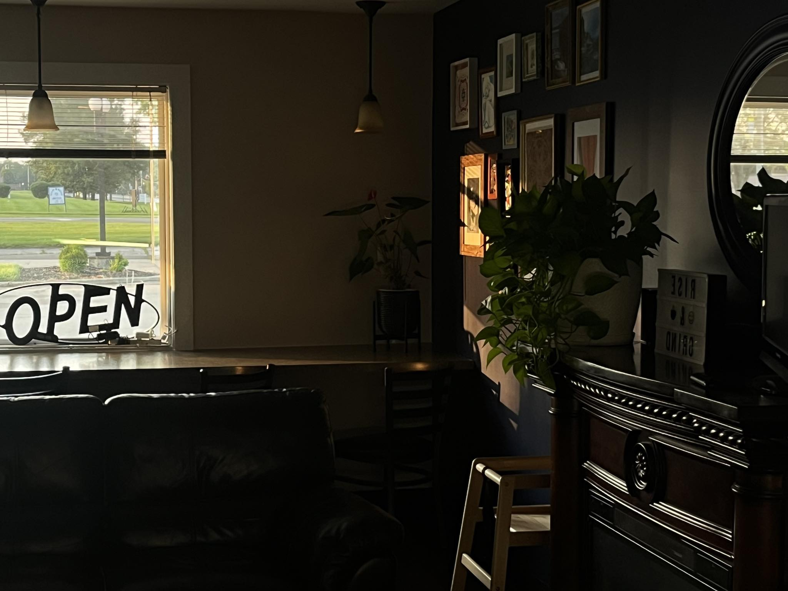

Welcome to Fairfield Coffee
Fairfield Coffee, located at 311 Nilles Rd in Fairfield, OH, is a cozy haven for coffee lovers. Renowned for its extensive selection, the café offers exceptional coffee alongside a variety of delicious food options, including sugar-free choices that cater to diverse dietary preferences. Customers rave about the welcoming atmosphere, friendly staff, and standout items like the Queen Bee coffee and delightful muffins. With a clean, relaxing ambiance perfect for unwinding, Fairfield Coffee ensures a memorable experience, whether you’re enjoying a leisurely cup or grabbing a quick drive-thru order. It's a must-visit spot for anyone seeking quality and comfort.

About Fairfield Coffee
Welcome to the delightful world of Fairfield Coffee, a charming coffee haven located at 311 Nilles Rd, Fairfield, OH. This local gem has garnered a dedicated following, thanks to its inviting atmosphere, exceptional coffee, and a menu that caters to all preferences.
As you step inside, you're welcomed by a cozy and cute ambiance that makes it the perfect spot to unwind. The experience at Fairfield Coffee transcends just grabbing a cup; it's about enjoying moments that linger. From the soothing decor to the friendly staff, every aspect is designed to make your visit memorable.
Fairfield Coffee shines particularly bright with its extensive selection of flavor options. Customers rave about the ability to customize their drinks, including countless sugar-free choices. Whether it's a classic latte or a specialty Americano with creative twists, patrons like LaRee L. Hughett highlight the innovative combinations such as SF English Toffee and SF Caramel. Each cup is crafted to perfection, and no detail is overlooked.
Exceptional Flavors: The menu includes a variety of mouthwatering options, such as the beloved Queen Bee drink that Jacob Welch champions.
Irresistible Food Pairings: The delightful muffins and freshly made sandwiches, notably the chicken salad croissant, have made a lasting impression on guests.
Welcoming Staff: Consistent positive remarks about the friendly team make the atmosphere even more welcoming, proving that great service is just as important as great coffee.
Christina Cotton's experience echoes the sentiments of many — the lattes paired with the extraordinary muffins provide a symphony of flavors that leaves guests feeling fulfilled and eager to return. The clean and well-maintained location adds to the overall appeal, ensuring that every visit is pleasant.
Add in the convenient drive-thru option, and it's clear that Fairfield Coffee is committed to serving its community with accessibility and care. This is more than just a coffee shop; it’s a community hub where connections are forged over shared loves of coffee and delectable treats.
In essence, whether you are a coffee aficionado, a tantalizing food lover, or someone just looking for a peaceful space to relax, Fairfield Coffee is a destination worth visiting. With every sip and bite, you’ll find moments to cherish, one cup at a time.